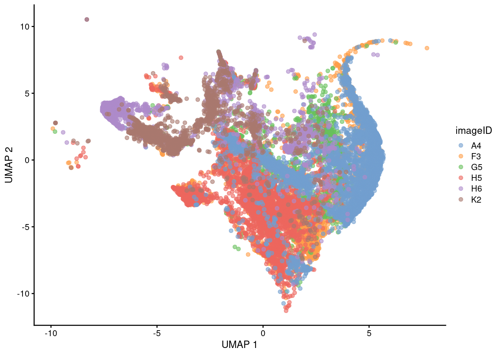

How to qc image batch-effect (simpleSeg::normalizeCells)
How to qc patient batch-effect (simpleSeg::normalizeCells)
How to qc batch effects (scMerge)
2.1 CellSPA: How do I determine segmentation quality?
2.2 simpleSeg: Do my images have a batch effect?
In many spatial imaging protocols, there tends to be a degree of variability in the intensity of each image. For example, in one image, the CD3 stain may be too strong, whereas in another image the CD3 staining is particularly weak. This variability is often times inevitable and can be hard to correct for in the imaging process. Hence, it is important that we identify when such variance occurs and correct it.
First, let’s load in the images we previously segmented out in the last section. The SpatialDatasets package conveniently provides the segmented out images for the HNsCC dataset from Ferguson et al., 2022.
The following object is masked from 'package:utils':
findMatches
The following objects are masked from 'package:base':
expand.grid, I, unname
Loading required package: IRanges
Loading required package: GenomeInfoDb
Loading required package: Biobase
Welcome to Bioconductor
Vignettes contain introductory material; view with
'browseVignettes()'. To cite Bioconductor, see
'citation("Biobase")', and for packages 'citation("pkgname")'.
Attaching package: 'Biobase'
The following object is masked from 'package:MatrixGenerics':
rowMedians
The following objects are masked from 'package:matrixStats':
anyMissing, rowMedians
see ?SpatialDatasets and browseVignettes('SpatialDatasets') for documentation
loading from cache
Next, we can check if the marker intensities of each cell require some form of transformation or normalisation. The reason we do this is two-fold:
1) The intensities of images are often highly skewed, preventing any meaningful downstream analysis.
2) The intensities across different images are often different, meaning that what is considered “positive” can be different across images.
By transforming and normalising the data, we aim to reduce these two effects. Here we extract the intensities from the counts assay. Looking at CD3 which should be expressed in the majority of the T cells, the intensities are clearly very skewed, and it is difficult to see what is considered a CD3- cell, and what is a CD3+ cell. Further, we can clearly see some image-level batch effect, where across images, the intensity peaks differ drastically.
# Plot densities of CD3 for each image.fergusonSPE |>join_features(features =rownames(fergusonSPE), shape ="wide", assay ="counts") |>ggplot(aes(x = CD3, colour = imageID)) +geom_density() +theme(legend.position ="none")
Another method of visualising batch effect is using a dimensionality reduction technique and visualising how the images separate out on a 2D plot. If no batch effect is expected, we should see the images largely overlap with each other.
# Usually we specify a subset of the original markers which are informative to separating out distinct cell types for the UMAP and clustering.ct_markers <-c("podoplanin", "CD13", "CD31","panCK", "CD3", "CD4", "CD8a","CD20", "CD68", "CD16", "CD14", "HLADR", "CD66a")set.seed(51773)# Perform dimension reduction using UMAP.fergusonSPE <- scater::runUMAP( fergusonSPE,subset_row = ct_markers,exprs_values ="counts")# Select a subset of images to plot.someImages <-unique(fergusonSPE$imageID)[c(1, 5, 10, 20, 30, 40)]# UMAP by imageID.scater::plotReducedDim( fergusonSPE[, fergusonSPE$imageID %in% someImages],dimred ="UMAP",colour_by ="imageID")

We can observe that from both our density plot and the UMAP, that there exists some level of batch effect in our dataset. simpleSeg also provides functionality for correcting image-level variability, using the normalizeCells() function.
In the normalizeCells() function, we specify the following parameters. transformation is an optional argument which specifies the function to be applied to the data. We do not apply an arcsinh transformation here, as we already apply a square root transform in the simpleSeg() function. method = c("trim99", "mean", PC1") is an optional argument which specifies the normalisation method/s to be performed. A comprehensive table of methods is provided below. assayIn = "counts" is a required argument which specifies what the assay you’ll be taking the intensity data from is named. In our context, this is called counts.
Method
Description
“mean”
Divides the marker cellular marker intensities by their mean.
“minMax”
Subtracts the minimum value and scales markers between 0 and 1.
“trim99”
Sets the highest 1% of values to the value of the 99th percentile.`
“PC1”
Removes the 1st principal component) can be performed with one call of the function, in the order specified by the user.
This modified data is then stored in the norm assay by default, but can be changed using the assayOut parameter.
# Leave out the nuclei markers from our normalisation process. useMarkers <-rownames(fergusonSPE)[!rownames(fergusonSPE) %in%c("DNA1", "DNA2", "HH3")]# Transform and normalise the marker expression of each cell type.fergusonSPE <-normalizeCells(fergusonSPE,markers = useMarkers,transformation =NULL,method =c("trim99", "mean", "PC1"),assayIn ="counts",cores = nCores)
We can then plot the same density curve where we can see that this normalised data appears more bimodal where we can at least observe a clear CD3+ peak at 1.00, and a CD3- peak at around 0.3, and the images overlap much more strongly.
# Plot densities of CD3 for each imagefergusonSPE |>join_features(features =rownames(fergusonSPE), shape ="wide", assay ="norm") |>ggplot(aes(x = CD3, colour = imageID)) +geom_density() +theme(legend.position ="none")
We can also visualise the effect of normalisation on the UMAP, where our images now overlap much more strongly with each other.